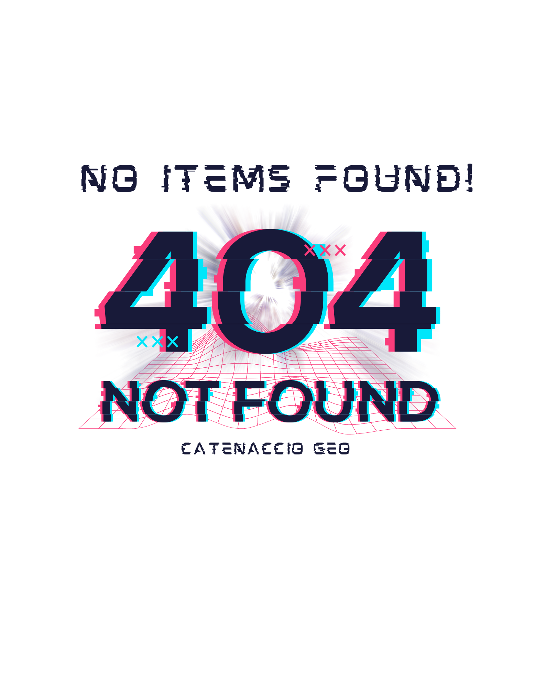

<div class="container">
    <div class="d-flex justify-content-center" *ngIf="(basketService.basketSource$ | async) === null">
        
        
    </div>
    <ng-container *ngIf="(basketService.basketSource$ | async) as basket">
        <div class="container">
            <div class="row">

                <app-basket-summary (addItem)="incrementQuantity($event)" 
                (removeItem)="removeItem($event)"></app-basket-summary>
            </div>
            <div class="row">
                <div class="col-6 offset-6">
                    <app-order-totals></app-order-totals>
                    <div class="d-grid mb-4">
                        <a class="btn btn-outline custom-outline-primary py-2" routerLink="/checkout">{{'ptch'| translate}}</a>
                    </div>
                </div>
            </div>
        </div>
    </ng-container>
</div>